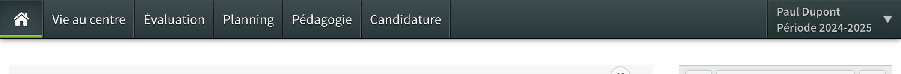
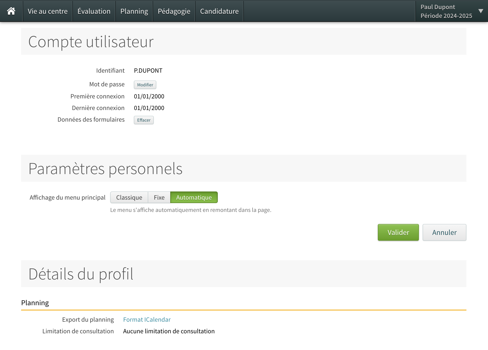
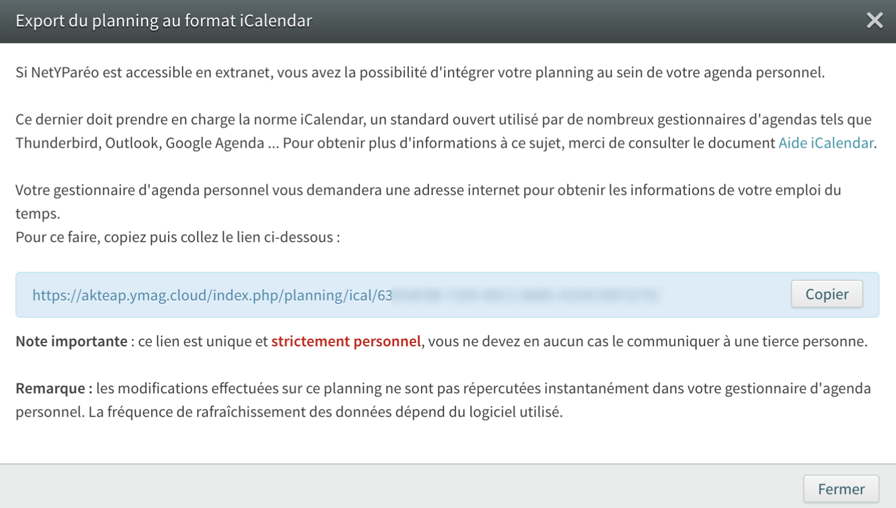

Page d'aide
Téléchargement de votre planning Yparéo au format .ics
1. Se connecter à Yparéo
2. Cliquer sur votre nom et prénom
3. Cliquer sur "Paramètres utilisateur"

4. Cliquer sur "Format iCalendar"
5. Cliquer sur le bouton "Copier"
6. Coller l'url dans un nouvel onglet du navigateur